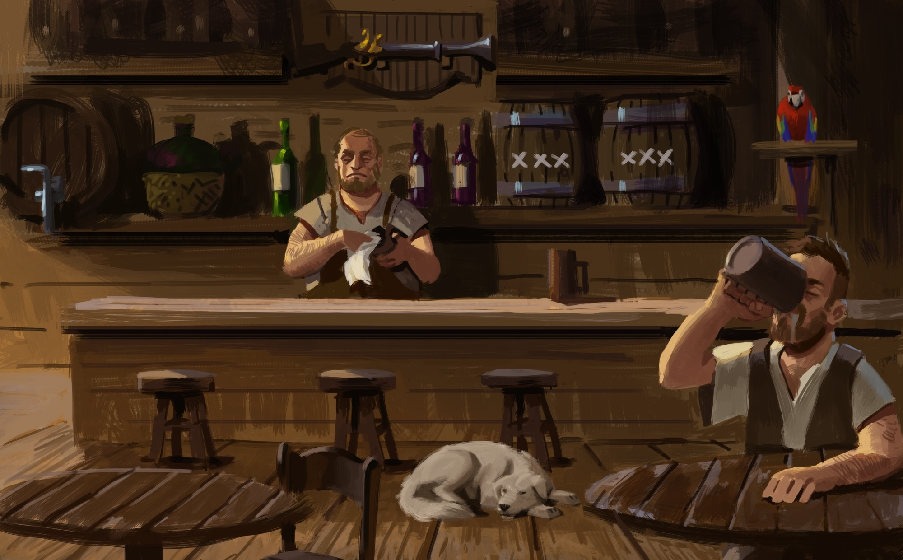

Dockside Draft

This mode replaces the standard Drafting Hand setup with an open, shared Supply that every player draws from in turn.
Set up the game as usual, except where the following rules override standard behavior.
Setup
Give the Starting Player token to a random player (use a coin or any convenient marker if needed).
Draft Loop
During the Draft phase, reveal 6 Supply cards face up on the table.
- Starting with the player holding the Starting Player token and proceeding clockwise, each player selects 1 card from the Supply.
- After each selection, replenish the Supply back to 6 cards, unless at least one player already has 5 cards in their Drafting Hand.
Continue until every player has 5 cards. Discard any remaining Supply cards, then pass the Starting Player token to the player on the left.
Special Abilities
Compass
If at least one player has a Compass, only players with 1 or more Compasses may select the first Draft card (the top-left card).
When you build your second or later Compass, draw a number of cards equal to the number of Compasses you have, choose 1, and discard the rest.
Hooks
The player who adds a Hook to their crew may immediately seize the Starting Player token. This effect is in addition to the Hook's existing effect.
Conflict Resolution
Whenever a rule calls for randomly selecting a player to resolve a conflict, select the player holding the Starting Player token instead.